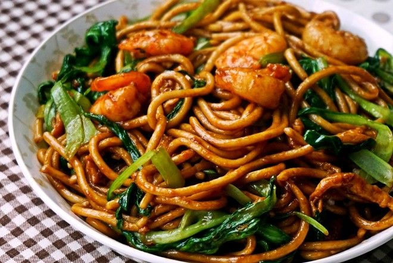

25 MenitMie Goreng Spesial ala Chinese Resto
Kombinasi tekstur mie yang lembut dan sedikit kenyal dengan aroma bumbu tumis sederhana yang harum dan legit dalam satu waktu.
By Chef Devina
Lihat Resep →